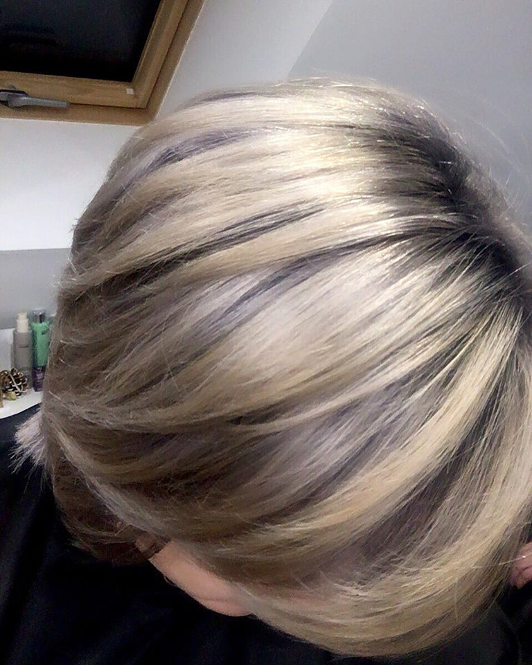
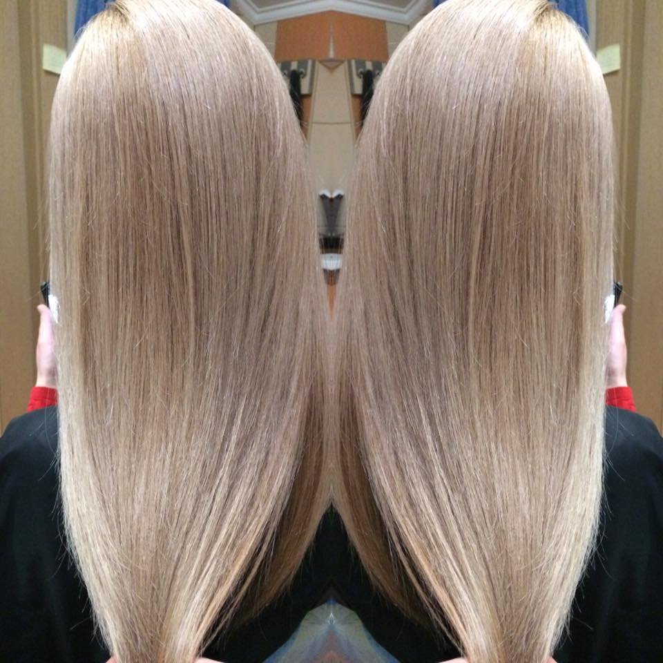
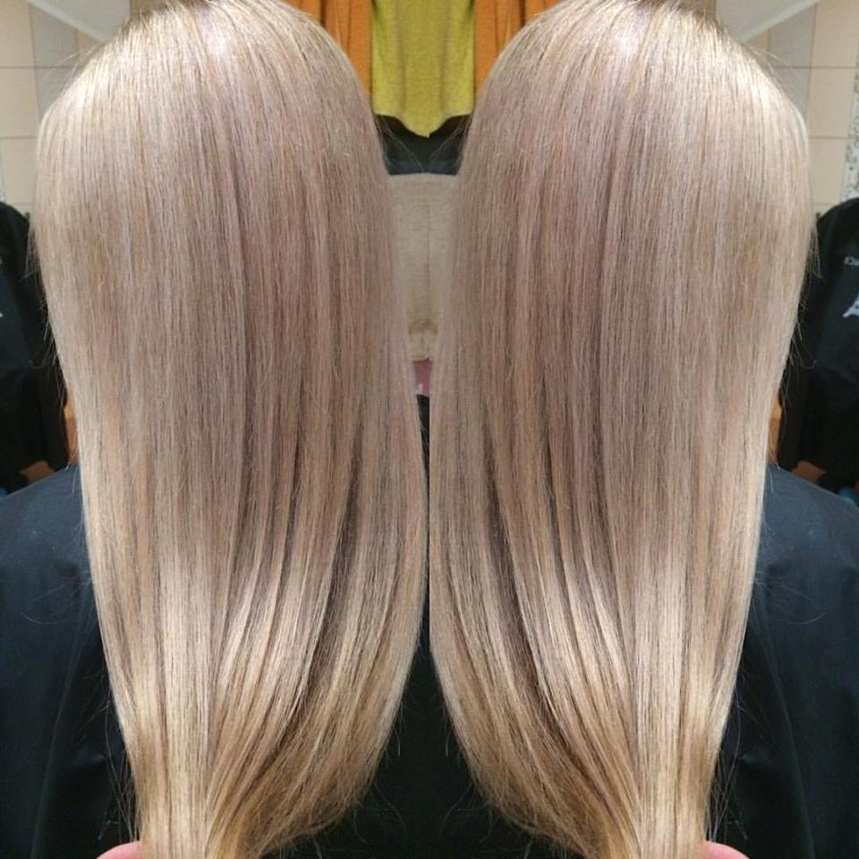

Щоб стати ідеальною блондинкою, якою мріють стати більшість жінок-брюнеток, необхідно знати, що це потребує кропітливої роботи хорошого та досвідченого майстра. Також в такій важливій справі необхідно підібрати саме такий відтінок блонду, який би пасував та підкреслив ідеальність образу. Наступним кроком є досягнення потрібного відтінка майстром та правильний догляд за ним.
У beauty studio IRYNY HUTSOL неодноразово чарівні брюнетки перетворювались в чарівних блондинок за 8 годин роботи! При цьому не пошкоджуючи волосся, за допомогою спеціального активного захисту комплексу OLAPLEX та різних СПА процедур для волосся.
Майстер Ірина Гуцол пропонують підібрати безліч відтінків та модних методик фарбування волосся у блонд.

Якщо Ви дуже хочете стати блондинкою, але не до кінця не уявляєте чи буде Вам пасувати блонд ідеально, Ви можете спробувати метод фарбування "Сіль з перцем"
Блонд "Сіль з Перцем"

Техніку фарбування "сіль з перцем", можна віднести до техніки прогресивного мілірування. Особливість такого фарбування у тому, що корінці волосся зафарбовують у темні тони, а по довжині волосся висвітлюють та зафарбовують платиновим, перлистим чи ніжним блондом. Техніка "сіль з перцем" виконується таким чином, що в обережному переплетенні темних корінців та світлого волосся нема контрасту, зовнішній вигляд виглядає довершеним, суцільним та ефектним.
Перлистий блонд з розовинкою.
 Перлистий блонд з розовинкою неймовірно ніжний та модний образ. Волосся русалоньки з дна моря. Перлинка, що виблискує блідо рожевими нотками. Такий відтінок блонду підкреслить Вашу оригінальність та освіжить образ. Ваш блонд заграє новими нотками.
Такі техніки потребують професійного підходу, якісних фарб, засобів для захисту і відновлення волосся та практики, це все Ви знайдете у салоні краси ІРИНИ ГУЦОЛ.
!098 584 4000 ЧЕКАЄМО!